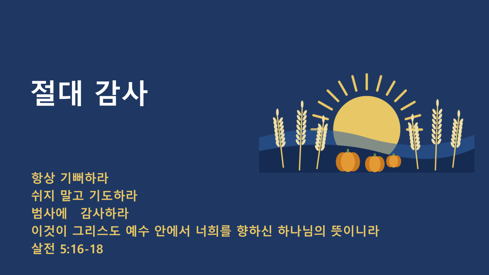

2026.11.15 추수감사주일 설교 묵상
절대감사
형편 때문이 아니라 그럼에도 불구하고. 본전 감사·성령 감사·소망 감사로 걷는 일주일
주일 설교 다시보기
설교 영상은 준비되는 대로 올리겠습니다.
본문: 데살로니가전서 5:16-18 (개역개정) · 설교자: 황을호 교수
감사에는 두 가지가 있습니다. 형편이 좋아서 드리는 상대 감사는 조건이 사라지면 함께 사라집니다. 그러나 무화과나무에 열매가 없고 우리에 양이 없어도 여호와로 말미암아 기뻐하겠다고 고백한 하박국처럼(합 3:17-18), 그럼에도 불구하고 드리는 절대 감사는 변하지 않으시는 하나님께 뿌리를 둡니다. 추수감사절도 풍족해서 시작된 절기가 아니었습니다. 1620년 신앙의 자유를 찾아 메이플라워호를 탄 102명 가운데 절반이 첫 겨울을 넘기지 못했지만, 남은 이들은 이듬해 가을 마음 놓고 예배할 수 있게 하신 하나님과 농사를 가르쳐 준 이웃에게 감사했습니다. 설교는 형편과 상관없이 감사할 세 가지 이유로 창조(하나님이 나를 지으시고 먼저 복 주심, 창 1:27-28), 상실(다 잃어도 하나님은 그대로이심, 욥 1:21), 구원(탕자에게 달려가신 아버지, 눅 15:20)을 들었습니다. 그리고 세 가지 실천을 권했습니다. 내 본전은 알몸이니 그 위의 모든 것을 덤으로 여기는 본전 감사, 성령의 이끄심을 따라 기뻐하는 성령 감사(눅 10:21), 아직 공사 중인 나를 끝내 완성하실 하나님을 바라보는 소망 감사(빌 1:6)입니다. 이번 한 주, 잠들기 전 세 가지 감사를 하나님께 말씀드려 보십시오.
감사에는 두 가지가 있습니다. 형편이 좋아서 드리는 상대 감사는 조건이 사라지면 함께 사라집니다. 그러나 무화과나무에 열매가 없고 우리에 양이 없어도 여호와로 말미암아 기뻐하겠다고 고백한 하박국처럼(합 3:17-18), 그럼에도 불구하고 드리는 절대 감사는 변하지 않으시는 하나님께 뿌리를 둡니다. 추수감사절도 풍족해서 시작된 절기가 아니었습니다. 1620년 신앙의 자유를 찾아 메이플라워호를 탄 102명 가운데 절반이 첫 겨울을 넘기지 못했지만, 남은 이들은 이듬해 가을 마음 놓고 예배할 수 있게 하신 하나님과 농사를 가르쳐 준 이웃에게 감사했습니다. 설교는 형편과 상관없이 감사할 세 가지 이유로 창조(하나님이 나를 지으시고 먼저 복 주심, 창 1:27-28), 상실(다 잃어도 하나님은 그대로이심, 욥 1:21), 구원(탕자에게 달려가신 아버지, 눅 15:20)을 들었습니다. 그리고 세 가지 실천을 권했습니다. 내 본전은 알몸이니 그 위의 모든 것을 덤으로 여기는 본전 감사, 성령의 이끄심을 따라 기뻐하는 성령 감사(눅 10:21), 아직 공사 중인 나를 끝내 완성하실 하나님을 바라보는 소망 감사(빌 1:6)입니다. 이번 한 주, 잠들기 전 세 가지 감사를 하나님께 말씀드려 보십시오.
주일 설교 슬라이드
1 / 40

좌우 화살표를 눌러 슬라이드를 넘겨보세요.
매일 이렇게 새로워지세요
- 그럼에도 감사하기: 형편이 좋아서가 아니라 변하지 않으시는 하나님 때문에 감사합니다.
- 본전 기억하기: 빈손으로 왔음을 기억하고, 그 위에 얹힌 모든 것을 받은 은혜로 셉니다.
- 성령께 여쭙기: 감사가 막힐 때 내 기분 대신 성령께 여쭙고, 그 이끄심을 따라 기뻐합니다.
- 완성을 바라보기: 아직 공사 중인 나와 가족을 끝내 완성하실 하나님께 미리 감사합니다.
요일별 묵상 여정
월요일
제목
성경구절